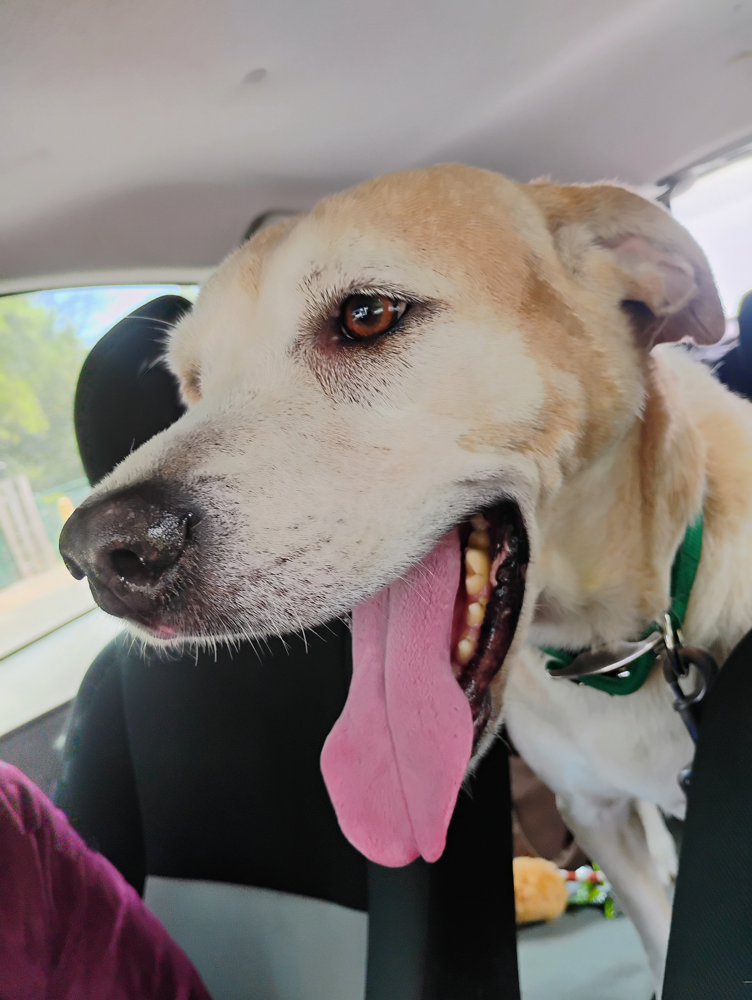

Mental health & recovery
Temporary dog care can remove one practical worry while a person seeks treatment or focuses on recovery.
✦ Hope • Healing • Homecoming ✦
A hospital stay. A safe escape. A season of recovery. When life changes unexpectedly, Second Leash helps people keep the dogs they love through compassionate temporary foster care and a commitment to reunion.
Arkansas-based 501(c)(3) nonprofit • Support depends on foster availability and safety review

❧ The greatest gift is keeping families together ❧
Our impact
These are more than animal-care outcomes. They represent people navigating difficult chapters with a little more hope.
The human side of the leash
We work alongside people experiencing temporary crises. Our volunteers care for their dogs while they focus on safety, treatment, recovery, or stability.
Temporary dog care can remove one practical worry while a person seeks treatment or focuses on recovery.
Survivors should not have to choose between seeking safety and protecting the bond with a beloved dog.
When an unexpected medical event interrupts daily life, temporary care can help preserve a path home.
We review requests involving deployment, treatment, and other temporary disruptions.
A short-term housing crisis should not automatically become a permanent family separation.
We support the possibility of reunification through periods of incarceration and transition.
Second Leash provides temporary pet-care coordination, not clinical mental health treatment, emergency shelter, or guaranteed placement.

A story of reunion
Bullwinkle spent five weeks in temporary foster care before being reunited with his person. That's what Second Leash is here for: not a permanent goodbye, but a bridge through a difficult moment.
Learn About Our MissionThere is a place for you here
Tell us about your situation and your dog's needs. Every request is reviewed individually.
Request Help →Give a dog a safe, temporary place to stay while their person works toward stability.
Become a Foster →Help cover food, supplies, veterinary care, transportation, and reunification.
Give Today →A season of hope
Your support helps preserve the human-animal bond when families need it most.